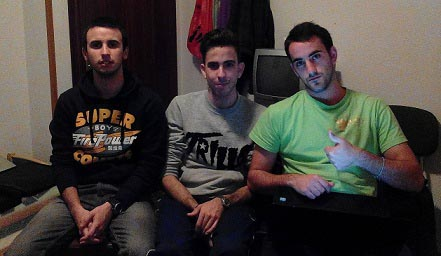

Participantes del proyecto Daniel Copado, Álvaro Arcalá y Enrique Ojeda de 1ºDAM del IES Virgen del Carmen son los participantes del grupo.http://www.iesvirgendelcarmen.com Otros proyectos http://www.bernillatorres.hol.es http://www.bernillatorres.hol.es |